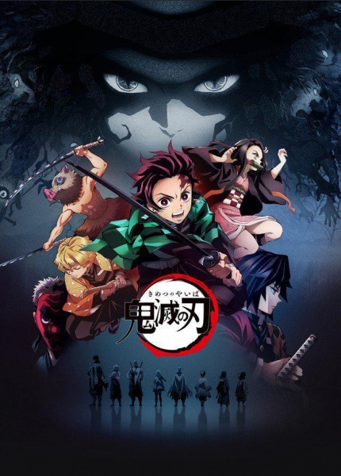
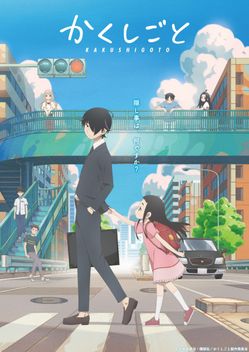
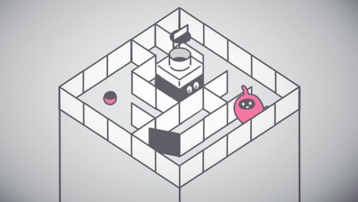
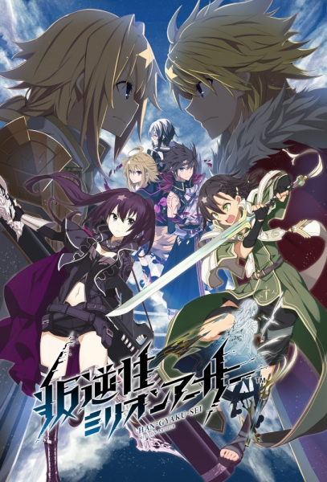

BACKGROUND
The World of Anime
Before data — the culture. Anime is a global phenomenon worth $25 billion annually, with 50–70 new TV series debuting in Japan every single season.
Some break through. Most don't.
Below: a snapshot of shows from our dataset — smash hits versus titles that never charted. What separated them? That's exactly what the algorithm is trying to learn.
CHARTED ✓
Attack on Titan
2013
CHARTED ✓

Demon Slayer
2019
CHARTED ✓

My Hero Academia
2016
CHARTED ✓

Jujutsu Kaisen
2020
CHARTED ✓
Dr. Stone
2019
NEVER CHARTED ✗

Ex-Arm
2021
NEVER CHARTED ✗

Wandering Witch
2020
NEVER CHARTED ✗

Gibiate
2020
NEVER CHARTED ✗

Lapis Re:LiGHTs
2020
NEVER CHARTED ✗

Listeners
2020
What is "charted"?
A show registers as charted if it appeared in Japan's official Video Research
weekly TV ratings at least once during broadcast. Less than half of all shows ever do.